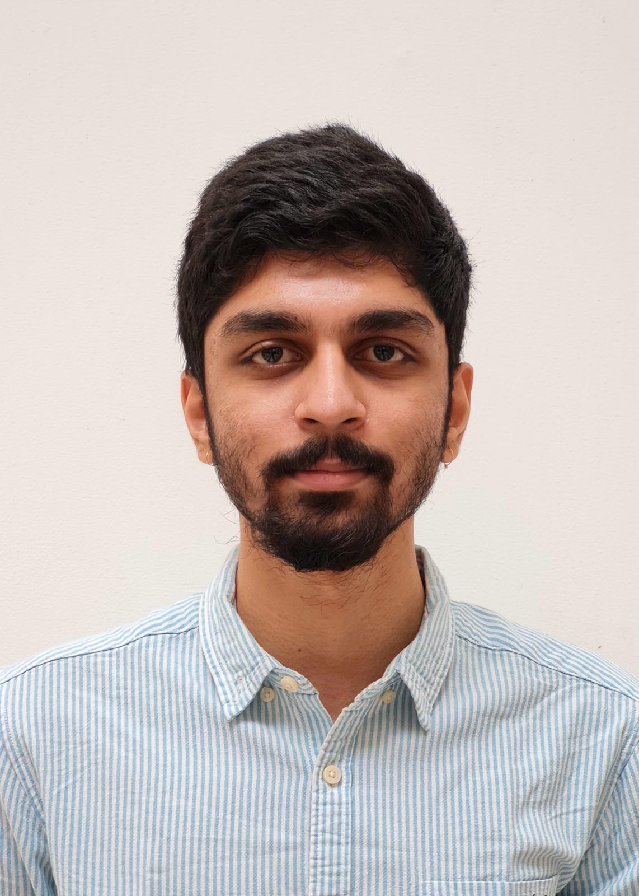

I am a PhD candidate in Economics at the Paris School of Economics (PSE), supervised by Professor Hélène Ollivier. My research focuses on climate risk and industrial development in developing economies. I am currently an Eiffel Excellence Doctoral Researcher. You can find my CV here.
Outside of research, I'm a Manchester United supporter, play ultimate frisbee and squash during my free time. I also enjoy cooking Indian food.